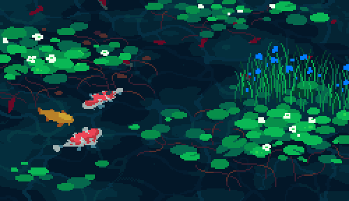

Hi! I'm Emily Mo.
I study EECS & Business @ UC Berkeley's MET Program. I'm interested in technically challenging problems, and in working with people who make the process of arriving at an answer as meaningful as the answer itself. More:
- Current SWE at SpaceX. Engineered full-stack developments to Starshield's [classified] platform in support of national security; built, tested, and adopted agent-in-the-loop programming environment for the team.
- Researcher at Berkeley's NetSys Lab working on LLM performance on cloud networking abstractions + Data Analytics Project Lead analyzing invoice, purchase orders, and various financial metrics for Murphy Oil.
- Previously developed database pipelines and led $MM cash reordering strategy for Barclays Resilience Team.
- Multi-Scholarship Recipient (Coke Scholars, Elks Scholar, Burger King Scholar), USA Kungfu Team Member.
Always interested in exploring new opportunities to learn. Please feel free to reach out!
email↗linkedin↗github↗